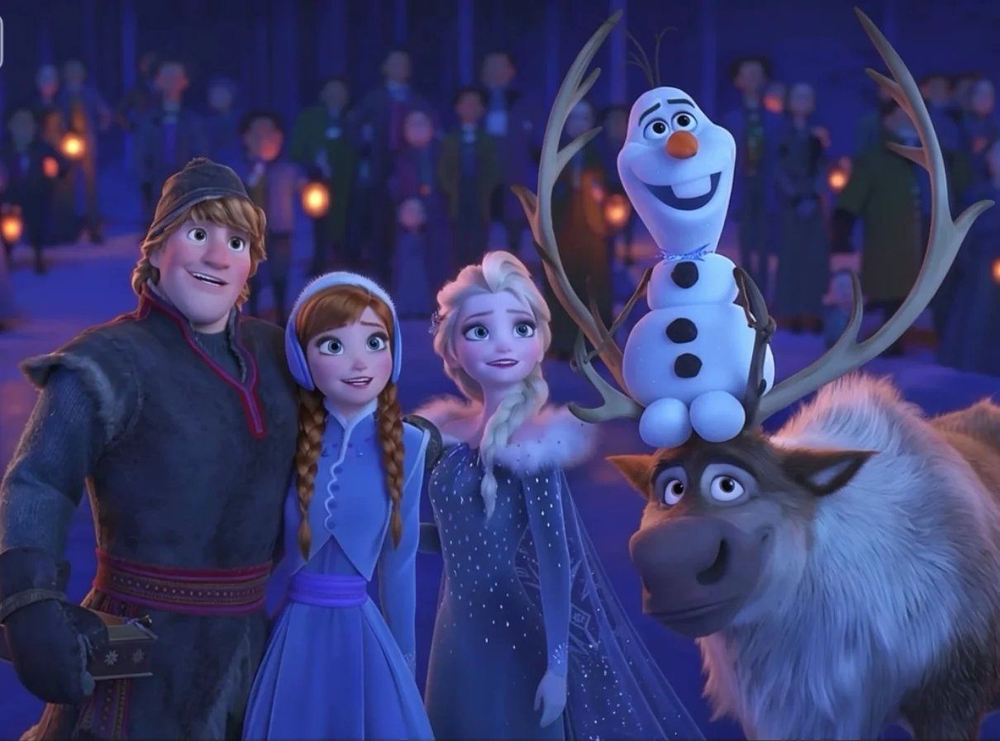

Olaf's Frozen Adventure（奥拉夫的冰雪冒险，2017）


时间线定位：电影1之后、电影2之前。阿伦黛尔已在艾莎的治理下恢复繁荣，王国迎来第一个圣诞/冬季节日季。
剧情开端：阿伦黛尔王国重新向百姓敞开大门后，迎来了第一个冬日假期。艾莎女王和安娜公主为王国举办了一场盛大的节日庆典，准备了惊喜派对。然而，当城堡钟声敲响后，所有宾客却纷纷离开，赶着回家与自己家人按各自的传统过节。安娜这才意识到，因为童年时艾莎被迫将自己隔离，她们姐妹俩并没有属于自己家庭的节日传统。雪宝在一旁听后，自告奋勇："我去帮你们收集全王国最好的节日传统！"

核心冒险：雪宝带着驯鹿斯文拖着雪橇走遍小镇，收集了各种代表不同节日传统的物品，包括拐杖糖、花环、毛衣、水果蛋糕，甚至还有犹太光明节的陀螺等。途中他们还遇到了奥肯，奥肯还给了他们一个便携式桑拿房作为"传统"。雪宝越收集越兴奋，满心以为"传统"就是一件件可以打包带走的具体东西，却渐渐发现每个家庭的传统都不一样，没有一个"最好的"。

转折与高潮：回程路上意外发生：桑拿房中的一块煤炭掉落，引燃了满载"传统"的雪橇。失控的雪橇冲下山坡，雪宝和斯文被一道鸿沟隔开，雪橇最终掉入深渊爆炸。雪宝侥幸逃生，只保住了一个水果蛋糕，随后在森林里遭到了狼群的袭击。与此同时，在城堡里，艾莎和安娜也因找不到传统而有些失落。她们登上阁楼，翻找尘封的旧物，在艾莎的童年箱子里发现了一个被珍藏的盒子——里面装满了安娜在被隔离的岁月里，每年圣诞节时从门缝下塞给她的手工小雪宝礼物。这个发现让姐妹俩明白了：她们一直拥有属于自己的传统，那就是雪宝。
结局：斯文逃回镇上，将雪宝遇险的消息告诉了克斯托夫、艾莎和安娜。她们立刻召集镇上居民前往森林寻找雪宝，最终成功找到了他。姐妹俩告诉雪宝，他——这个由她们童年时的爱创造出的雪人，就是她们真正的家庭传统。全片在温馨的歌声中结束：艾莎用魔法造出一棵冰雪圣诞树，所有阿伦黛尔的居民围聚在一起，共同唱起了主题曲"When We're Together"（当我们在一起），创造了属于整个王国的新传统。
歌曲：全片四首原创歌曲——"Ring in the Season"（敲响节日钟声）、"That Time of Year"（一年中的这个时节，雪宝主唱）、"The Ballad of Flemmingrad"（弗莱明拉德民谣）、"When We're Together"（当我们在一起，全片主题曲）。